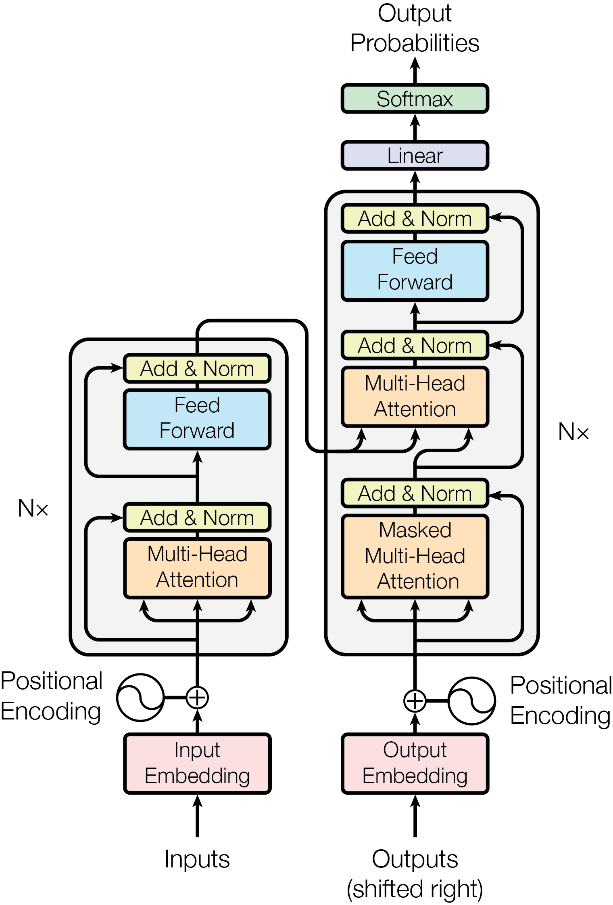
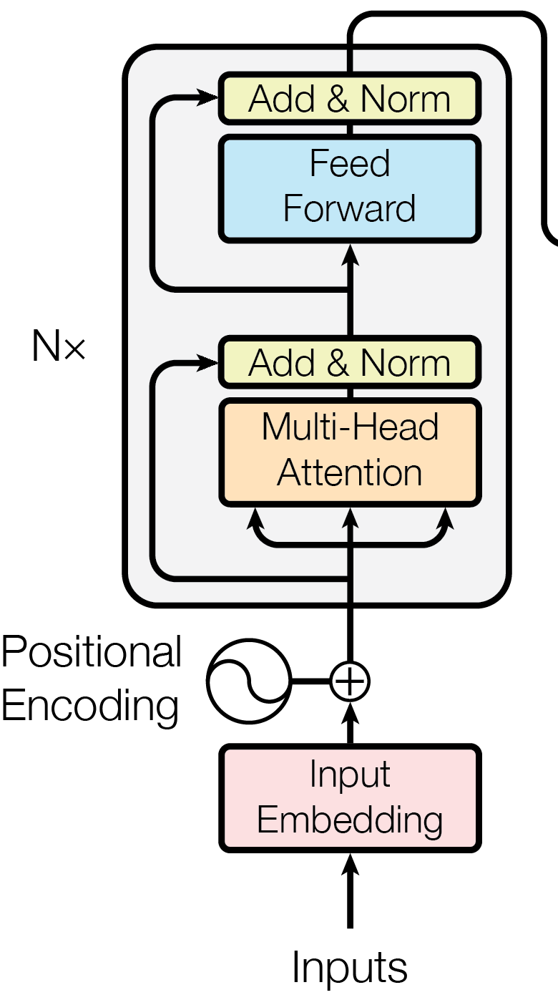
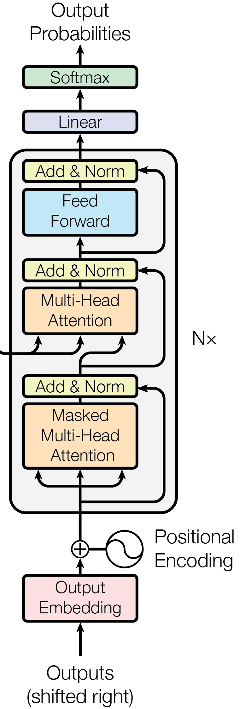

A Transformer is a stack of identical blocks, all trained together so the top vectors predict well.
Each block mixes information across tokens with attention, then updates every token on its own with a small feed-forward network.
Every block runs on every forward pass over all tokens, in training and in generation.
As in Attention, each token (a word or word piece) is a vector of \(d_{\text{model}}\) numbers making a query, a key and a value, stacked as rows of \(Q\), \(K\) and \(V\) (key length \(d_{k}\)).
Several heads run attention side by side, and in a decoder a causal mask stops each token from seeing later ones.
Attention, the layer every block on this page reuses.
Each token's output is a weighted average of every token's value, weighted by how well its query matches each key. Softmax turns each row of scores into weights that add to 1, and dividing by \(\sqrt{d_{k}}\) keeps the scores from growing with key length. The superscript \(T\) is the transpose, not the sequence length; Attention walks through each step. This is the only place in a block where tokens see each other.
1 Attention mixes tokens, the FFN transforms each one, residuals add the results
A block runs two sublayers in turn: attention mixes information between tokens, then a small feed-forward network (FFN), two linear layers with a ReLU nonlinearity (it zeroes negative numbers) between them, transforms each token on its own.
Each sublayer adds its result back onto the token's vector instead of replacing it, so that running vector, the residual stream, flows straight up through every block.
Figure 1. Each sublayer reads the stream and adds its result back; nothing replaces \(x\), so the input still reaches the top.
LayerNorm (LN; Ba et al., 2016) rescales a token's vector to mean 0 and variance 1 using only that token's numbers (Section 2 has the details).
With LN before each sublayer, a layout called Pre-LN, one block is two lines plus one final LayerNorm:
One Pre-LN block, the layout most models use today.
Each token's vector \(x\) becomes itself plus what attention found in the other tokens (read = as "becomes"). Attention reads a normalized copy LN(\(x\)), so its input has a standard scale however large \(x\) has grown, while the stream itself is never rescaled. Because the result is added, a sublayer that has learned nothing useful yet adds about zero and the token passes through intact.
Then each token adds what the FFN computes from its own normalized copy. The shape repeats the line before, but the FFN looks at one token at a time: attention moved information between tokens, and the FFN now transforms what each token holds.
The output layer receives a normalized vector \(y\). Every block adds to the stream and none rescales it, so after the last of the \(N\) blocks, \(x_{N}\) can be far off a standard scale; one final LayerNorm fixes that once, at the top.
The gradient through one residual step, which is why each sublayer adds instead of replacing.
The training signal passes through a residual step undiminished, plus whatever the sublayer adds. \(\partial\) asks how the output changes as \(x\) changes; for \(x + F(x)\), with \(F\) the sublayer, that is the identity \(I\) plus the sublayer's own change \(F'\), the sum rule for two paths that meet. The \(I\) comes from the plain \(x\) term: it hands the gradient down unchanged, so even the bottom block receives the gradient of the loss, however small \(F'\) gets. Replace \(x + F(x)\) with \(F(x)\) alone and only \(F'\) remains, multiplied once per layer (He et al. 2016, Identity Mappings, eq. 5).
The FFN, applied to every token separately with the same weights; the original model used \(d_{\text{model}}\) = 512 and \(d_{\text{ff}}\) = 2048.
\(\displaystyle u = \max(0, \htmlStyle{color:var(--sym-x)}{x}\htmlStyle{color:#1e8449}{W_{1}} + \htmlStyle{color:var(--sym-bias)}{b_{1}})\)
The token is widened into a hidden vector \(u\) of \(d_{\text{ff}}\) numbers, four times wider than \(d_{\text{model}}\) in the original model. \(x W_{1} + b_{1}\) is a linear map (\(W\) a weight matrix, \(b\) a bias); max(0, …), called ReLU, zeroes the negatives. That nonlinearity is what makes the FFN more than one big matrix: each hidden unit fires only for some inputs, like a learned feature detector.
The FFN's output is back at \(d_{\text{model}}\) numbers, ready to add onto the stream. \(W_{2}\) and \(b_{2}\) map the fired features of \(u\) back down, so each feature that fired writes its own direction into the token.
The Pre-LN block in PyTorch; shape (\(B\), \(T\), \(d\)) goes in and comes out.
import torch
import torch.nn as nn
from torch.nn import MultiheadAttention as MHA
class Block(nn.Module):
def __init__(self, d, h, d_ff):
super().__init__()
self.ln1 = nn.LayerNorm(d)
self.ln2 = nn.LayerNorm(d)
self.attn = MHA(d, h, batch_first=True)
self.W1 = nn.Linear(d, d_ff)
self.W2 = nn.Linear(d_ff, d)
def forward(self, x, mask=None): # x (B, T, d)
y = self.ln1(x)
out, _ = self.attn(y, y, y, attn_mask=mask)
x = x + out # x + Attn(LN(x))
u = self.W1(self.ln2(x)).relu() # (B, T, d_ff)
return x + self.W2(u) # x + FFN(LN(x))
1The block's layers, two LayerNorms, attention and the FFN matrices \(W_{1}\) and \(W_{2}\) of the FFN card in Section 1, lines 1 and 2.
2Attention sublayer, line 1 of the Pre-LN card in Section 1.
3FFN sublayer, line 2 of the Pre-LN card, with \(u\) from line 1 of the FFN card.
Passing one normalized tensor as query, key and value makes this self-attention.
2 LayerNorm, not BatchNorm, normalizes each token alone
LayerNorm normalizes each token using only that token's own numbers:
LayerNorm on one token's vector \(x\) of \(d_{\text{model}}\) features.
LayerNorm returns the token's vector at a standard scale, then lets training pick the scale it wants. Subtracting the token's own mean \(\mu\) centers it at 0, and dividing by its spread (\(\sigma^{2}\) is its variance, \(\varepsilon\) a tiny constant that stops a division by zero) sets its variance to 1, so a token whose numbers have grown much bigger comes out the same. The learned \(\gamma\) and \(\beta\) then rescale and shift each feature (\(\odot\) multiplies feature by feature), so the network can undo the normalization where that helps.
BatchNorm (Ioffe and Szegedy, 2015), the usual choice in image models, instead averages each feature over every token of every sequence in the batch:
Figure 2. Orange cells are averaged together. LayerNorm never looks outside one token.
Both kinds of mean on one batch, then LayerNorm on a single token.
import torch
import torch.nn.functional as F
B, T, d = 32, 10, 512
x = torch.randn(B, T, d)
ln_mean = x.mean(dim=-1) # LayerNorm, (B, T)
bn_mean = x.mean(dim=(0, 1)) # BatchNorm, (d,)
one_token = torch.tensor([1.0, 2.0, 3.0])
print(F.layer_norm(one_token, (3,))) # mean 0, variance 1
1LayerNorm averages over one token's features, the \(\mu\) of the LN card in Section 2, line 1; BatchNorm averages over the batch, the orange cells of Figure 2.
2LayerNorm on one short token, the LN card in Section 2, line 1.
BatchNorm's batch averages mix in other sentences and padding, and at inference it switches to stored averages; LayerNorm uses one token's own numbers, so training and inference match.
3 Where the norm sits decides whether training needs warmup
Warmup means starting with a tiny learning rate and ramping it up over the first few thousand steps.
LayerNorm can sit before each sublayer or after each add, and that choice decides whether training needs warmup.
The 2017 paper put it after the add, on the stream itself, a layout called Post-LN:
Each block adds the sublayer's result to \(x\), then normalizes the sum. Sublayer is attention or the FFN. Because LN wraps the whole sum, even the copy of \(x\) that skipped the sublayer is rescaled in every block, so the clean identity path of the residual step no longer runs straight from the top to the bottom; compare \(x\) + Attn(LN(\(x\))) in Pre-LN, where the plain \(x\) is never touched.
Figure 3. Same parts; only the LayerNorm moves. \(f\) is attention or the FFN; the blue line is the stream.
Xiong et al. (2020) showed that going backward, a LayerNorm divides the gradient by the same spread it divided its input by going forward (the square root in the LN card of Section 2).
So a larger input lets a smaller gradient through.
In Pre-LN every block adds onto the stream and nothing rescales it, so the stream's size, the root mean square (RMS) of its numbers, grows with each block, and the final LayerNorm divides the gradient by that growing size.
In Post-LN the stream is renormalized inside every block, so the last LayerNorm always divides by about the same size, and the gradient near the output stays large however many blocks are stacked.
Because each LayerNorm also breaks the identity path (the Post-LN card above), that large gradient is not carried down unchanged: it is largest near the output and smaller toward the input.
Large gradients near the output mean a full-size learning rate makes the first updates there too big, and training can diverge; warmup keeps the early steps small until the gradients settle.
Pre-LN's top gradient is smaller and shrinks as the stack deepens, so it can start at the full learning rate with no warmup.
Post-LN's top gradient is 2.6× Pre-LN's.
Figure 4.1Pre-LN's stream grows. 2 Its gradient falls. 3 Not Post-LN's.
The original Post-LN Transformer warmed up with this schedule, then decayed.
The learning rate at each training step, from the original paper (warmup = 4000).
The learning rate rises for the first 4000 steps, then falls slowly for the rest of training. min picks the smaller of the two terms below, so the smaller term sets the rate; the factor \(d_{\text{model}}^{-0.5}\) lowers the whole curve for wider models.
The warmup term \(b\) climbs in a straight line from 0. It is the smaller term until step = warmup = 4000, where the two terms meet at the peak; after that \(a\) is smaller and the rate decays. A longer warmup gives a lower, later peak.
The schedule in Python.
WARMUP = 4000
def lrate(step, d_model=512, warmup=WARMUP):
step = max(step, 1) # avoid 0 ** -0.5
a = step ** -0.5 # decay term
b = step * warmup ** -1.5 # warmup term
return d_model ** -0.5 * min(a, b)
print(lrate(4000), lrate(16000)) # peak, then half
1The decay term \(a\), line 2 of the schedule card in Section 3.
2The warmup term \(b\), line 3 of the schedule card.
3The smaller of the two, scaled, line 1 of the schedule card.
4The rate peaks at step 4000, where lines 2 and 3 of the schedule card meet, then decays as the decay term shrinks.
linear warmupinverse square root decay
Figure 5. The rate peaks at step 4000, then decays slowly.
The paper behind that backward rule also trained Pre-LN models with no warmup and, in its words, reached "comparable results with baselines while requiring significantly less training time".
One of its tests was BERT, a Post-LN stack of 12 blocks in BERT-base and 24 in BERT-large. Post-LN BERT-base was trained with 10,000 warmup steps to a peak of 1e-4; a peak of 3e-4 diverged. Pre-LN BERT-base started at 3e-4 with no warmup.
4 Encoder-only, encoder-decoder and decoder-only stacks
The same block builds three kinds of model, differing in the self-attention mask and whether a second stream comes in.
An encoder stack lets every token see every other token, past and future. BERT (Devlin et al. 2019) is encoder-only.
A decoder stack uses the causal mask, so each token sees only itself and earlier tokens. GPT (Radford et al., 2018), OpenAI’s family of text generators, is decoder-only.
The 2017 translator uses both. Its decoder blocks add a cross-attention sublayer, with queries from the decoder and keys and values from the encoder's output; Cross-Attention covers it.
Figure 6. The small grids are the self-attention masks; each stack repeats its block \(N\) times.
5 Reading the full Transformer diagram
The 2017 translator is an encoder-decoder: the encoder reads the source sentence, and the decoder writes the translation while reading the encoder through cross-attention.

1234

12

34Figure 7. The Transformer paper's Figure 1, whose caption reads "The Transformer - model architecture." arXiv:1706.03762
1Input Embedding turns tokens into vectors and the plus circle adds the position signal; data flows upward.
2The encoder reads the input: \(N\) blocks (Nx), each sublayer wrapped in the Post-LN Add & Norm.
3The decoder writes the output: causal-masked attention, then attention over the encoder's keys and values.
4Linear and Softmax turn the decoder's last vector into a probability for every vocabulary word.
6 Translation results on WMT 2014
The paper trained on WMT 2014 English to German and English to French on 8 NVIDIA P100 GPUs and scored translations with BLEU, which counts word sequences shared with human translations (higher is better), against ensembles (several models combined) of ConvS2S, a convolutional translation model.
On English to German the base model scored 27.3 against the ConvS2S ensemble's 26.36, and on English to French it scored 38.1 against the ensemble's 41.29, while the big model beat the ensemble on both, 28.4 and 41.8.
7 A decoder-only model predicts the next token at every position
Most models in use today, GPT among them, are decoder-only: one sequence, no encoder. The model predicts the next token, appends it and predicts again (autoregressive generation).
Training minimizes the cross entropy averaged over positions:
The decoder-only training loss, cross entropy at every position, averaged.
The loss \(L\) is low when the model gives the real next token a high probability at every position. \(P\)(\(x_{t}\) | \(x_{<t}\)) is the probability the model gives the true token at position \(t\), seeing only the tokens before it. The \(-\log\) turns a probability of 1 into 0 loss and a probability near 0 into a large one, so confident misses cost the most; the sum over the \(T\) positions, divided by \(T\), averages them, so one sequence grades \(T\) predictions at once.
Figure 8. Each row is one position, graded on the orange word; the loss averages the rows.
MiniGPT wraps the Block class from Section 1 with a token table, a position table and a final LayerNorm, and reuses the token table as the output layer, giving logits, one raw score per vocabulary word.
import torch
import torch.nn as nn
MAX_LEN, N_HEADS = 128, 8
class MiniGPT(nn.Module):
def __init__(self, V, d, N): # vocab, width, blocks
super().__init__()
self.tok = nn.Embedding(V, d)
self.pos = nn.Embedding(MAX_LEN, d)
blocks = [Block(d, N_HEADS, 4*d) for _ in range(N)]
self.body = nn.ModuleList(blocks)
self.ln = nn.LayerNorm(d) # final LayerNorm
def forward(self, idx): # idx (B, T) token ids
T = idx.size(1)
x = self.tok(idx) + self.pos.weight[:T]
mask = torch.ones(T, T, dtype=torch.bool).triu(1)
for block in self.body:
x = block(x, mask)
return self.ln(x) @ self.tok.weight.T # (B, T, V)
1Token and position tables, the stack of blocks and a final LayerNorm, the decoder-only stack of Figure 6.
2Token vectors plus position vectors, the input of every row in Figure 8.
3The causal mask and the blocks in order, so each row of Figure 8 sees only earlier words.
4Final LayerNorm, the Pre-LN card in Section 1, line 3, then scores over the vocabulary.
Weight tying makes the output layer reuse the embedding table (both are vocabulary size by model width), saving a large block of weights.
Training MiniGPT on random toy batches, grading each position against the next token.
import torch
import torch.nn.functional as F
VOCAB, d, N, LR = 10_000, 256, 4, 3e-4
model = MiniGPT(VOCAB, d, N)
opt = torch.optim.AdamW(model.parameters(), lr=LR)
batches = [torch.randint(VOCAB, (8, 64)) for _ in range(10)]
for ids in batches: # ids (B, T)
logits = model(ids)
pred = logits[:, :-1].flatten(0, 1)
target = ids[:, 1:].flatten() # one step later
loss = F.cross_entropy(pred, target, reduction="mean")
opt.zero_grad()
loss.backward()
opt.step()
1Model, AdamW optimizer and 10 random batches of token ids, the \(x_{t}\) of the loss card in Section 7, line 1.
2Shifts by one so each position predicts the next token, the loss card in Section 7, line 1.
3One optimizer step lowers \(L\), the loss card in Section 7, line 1.
At generation a setting called temperature divides the last position's logits before the softmax:
Softmax with temperature, the probability of word \(i\) as the next token.
Each logit \(z_{i}\) is divided by the temperature \(\tau\) (tau) before the softmax, and the sum over every word \(j\) below the fraction bar makes the \(p_{i}\) add to 1. Dividing every logit by the same number never swaps two of them, so the ranking never changes. Sampling the Next Token explains how \(\tau\) sharpens or flattens the distribution.
In generation, a prompt goes in and comes back with n_new tokens added.
import torch
@torch.no_grad()
def generate(model, ids, n_new, tau=1.0, max_len=128):
for _ in range(n_new):
z = model(ids[:, -max_len:])[:, -1] # (B, V)
p = (z / tau).softmax(dim=-1)
nxt = p.multinomial(1) # one token per row
ids = torch.cat([ids, nxt], dim=1)
return ids
1Logits for the last position only, the \(z_{i}\) of the temperature card in Section 7, line 1.
2Temperature \(\tau\) divides them before the softmax, the temperature card, line 1.
3Samples one token by the probabilities \(p_{i}\) of the temperature card, line 1, and appends it.
multinomial draws a token by those probabilities; Sampling the Next Token shows top-k, top-p and min-p, which sample from only the likeliest words. Each step recomputes every earlier token's keys and values; Transformer Cost and Efficiency shows how a cache removes that.
lowhigh
the cat sat on the …
Figure 9. Temperature sharpens or flattens the same distribution; the order of the words never changes.
8 PyTorch ships the block as one layer
The base model's six-block encoder from PyTorch's layer, Pre-LN; shape (\(B\), \(T\), 512) goes in and comes out.
import torch
import torch.nn as nn
D_MODEL, HEADS, D_FF, N_LAYERS = 512, 8, 2048, 6
cfg = dict(dropout=0.1, batch_first=True, norm_first=True)
layer = nn.TransformerEncoderLayer(D_MODEL, HEADS, D_FF, **cfg)
final_norm = nn.LayerNorm(D_MODEL)
encoder = nn.TransformerEncoder(layer, N_LAYERS, norm=final_norm)
x = torch.randn(2, 10, D_MODEL) # (B, T, d_model)
print(encoder(x).shape) # (B, T, d_model)
print(sum(p.numel() for p in encoder.parameters()))
# about 12 d_model ** 2 per block
1Six Pre-LN encoder layers plus a final LayerNorm, the Pre-LN card in Section 1, lines 1 to 3.
2Shape goes in and comes out unchanged, like the stream \(x\) in Figure 1.
3Per block \(4d^{2}\) for attention's four projections plus \(8d^{2}\) for the two FFN matrices of the FFN card in Section 1, lines 1 and 2.
Block
Each of the \(N\) blocks, every forward pass, every token.
LayerNorm
Per token before each sublayer (Pre-LN), every forward pass; a learned gain and bias of size \(d\).
Sets the learning rate at every optimizer step from the step count; 4000 warmup steps in the base model. More steps start slower and safer, fewer risk Post-LN diverging, and Pre-LN can skip it.
Next-token loss
Every training step, all \(T\) positions of a sequence graded in one pass.
At generation, once per new token. Temperature \(\tau\) divides the logits: higher flattens toward random picks, lower sharpens toward the top token; near 0 it is greedy, always the top token, and very large it is uniform. Default 1.0, the plain softmax (temperature in Hugging Face's generation config).
Width of the \(x\) every block reads and writes. Wider holds more per token at quadratic cost; narrower is cheaper and holds less. The base Transformer uses 512, with 8 heads, FFN width 2048, 6 blocks and ReLU. PyTorch's defaults match the base model, including Post-LN (norm_first=False); this page's code sets norm_first=True for Pre-LN.
Width of the FFN's hidden vector \(u\); 2048, four times \(d_{\text{model}}\), in the base model. Wider stores more per token, with FFN weights growing linearly as \(2 d_{\text{model}} d_{\text{ff}}\); narrower is cheaper and stores less; near 0 only attention is left. dim_feedforward in PyTorch, default 2048.
How many blocks are stacked; 6 in the base model's encoder and decoder. More blocks give each token more rounds of mixing and transforming, at cost linear in \(N\); fewer is cheaper and shallower; at 0 only the embeddings and output layer remain. num_layers in nn.TransformerEncoder, no default.
Dropout
Zeroes that fraction of each sublayer's output in training, before it joins \(x\); off at inference. More fights overfitting and slows learning, less fits faster; 0 is none, near 1 passes nothing. The base Transformer uses 0.1, also PyTorch's default.
With norm_first=True, pass the final LayerNorm through norm=.
batch_first defaults to False here too.
All blocks start with the same weights; PyTorch's docs say to re-initialize them.
A decoder-only model needs a causal mask passed in.
What changes when one stream reads another, such as a translation reading its source? Cross-Attention.
9 References
Vaswani, A., et al. (2017). Attention Is All You Need. NeurIPS 2017. arXiv:1706.03762.
He, K., et al. (2016). Identity Mappings in Deep Residual Networks. ECCV 2016. arXiv:1603.05027.
Ba, J. L., et al. (2016). Layer Normalization. arXiv:1607.06450.
Ioffe, S., and Szegedy, C. (2015). Batch Normalization: Accelerating Deep Network Training by Reducing Internal Covariate Shift. ICML 2015. arXiv:1502.03167.
Xiong, R., et al. (2020). On Layer Normalization in the Transformer Architecture. ICML 2020. arXiv:2002.04745.
Radford, A., et al. (2018). Improving Language Understanding by Generative Pre-Training. OpenAI. PDF.
Devlin, J., et al. (2019). BERT: Pre-training of Deep Bidirectional Transformers for Language Understanding. NAACL 2019. arXiv:1810.04805.